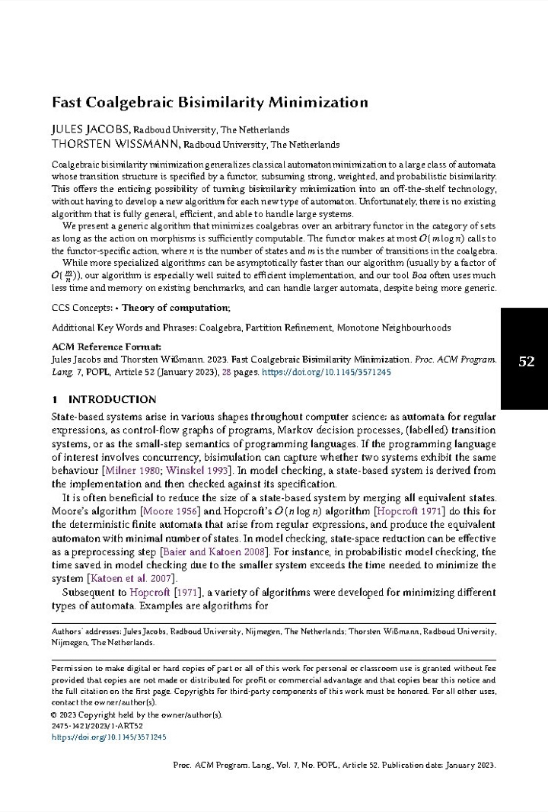

Coalgebraic bisimilarity minimization covers strong, weighted and probabilistic bisimilarity, but no existing algorithm was fully general, efficient and able to handle large systems. This paper gives a generic algorithm making at most O(m log n) calls to the functor-specific action. Its implementation, Boa, often uses much less time and memory on existing benchmarks and handles larger automata.

Read the paperCoalgebraic bisimilarity minimization generalizes classical automaton minimization to a large class of automata whose transition structure is specified by a functor, subsuming strong, weighted, and probabilistic bisimilarity. This offers the enticing possibility of turning bisimilarity minimization into an off-the-shelf technology, without having to develop a new algorithm for each new type of automaton. Unfortunately, there is no existing algorithm that is fully general, efficient, and able to handle large systems.
We present a generic algorithm that minimizes coalgebras over an arbitrary functor in the category of sets as long as the action on morphisms is sufficiently computable. The functor makes at most O(m log n) calls to the functor-specific action, where n is the number of states and m is the number of transitions in the coalgebra.
While more specialized algorithms can be asymptotically faster than our algorithm (usually by a factor of O(m/n)), our algorithm is especially well suited to efficient implementation, and our tool Boa often uses much less time and memory on existing benchmarks, and can handle larger automata, despite being more generic.
@article{jacobs2023boa,
title = {Fast Coalgebraic Bisimilarity Minimization},
volume = {7},
ISSN = {2475-1421},
url = {https://doi.org/10.1145/3571245},
DOI = {10.1145/3571245},
number = {POPL},
journal = {Proceedings of the ACM on Programming Languages},
publisher = {Association for Computing Machinery (ACM)},
author = {Jacobs, Jules and Wißmann, Thorsten},
year = {2023},
month = Jan,
pages = {1514--1541}
}